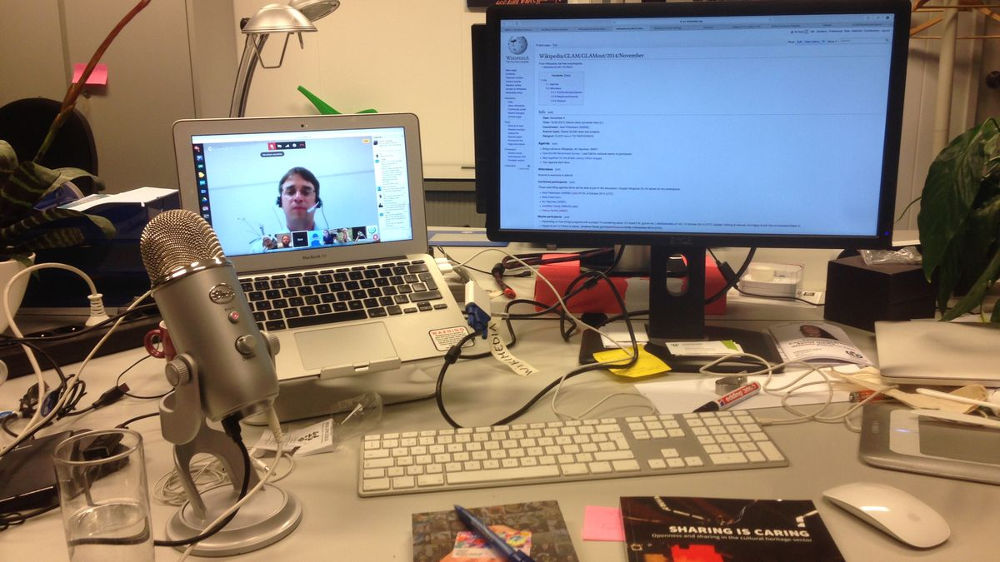
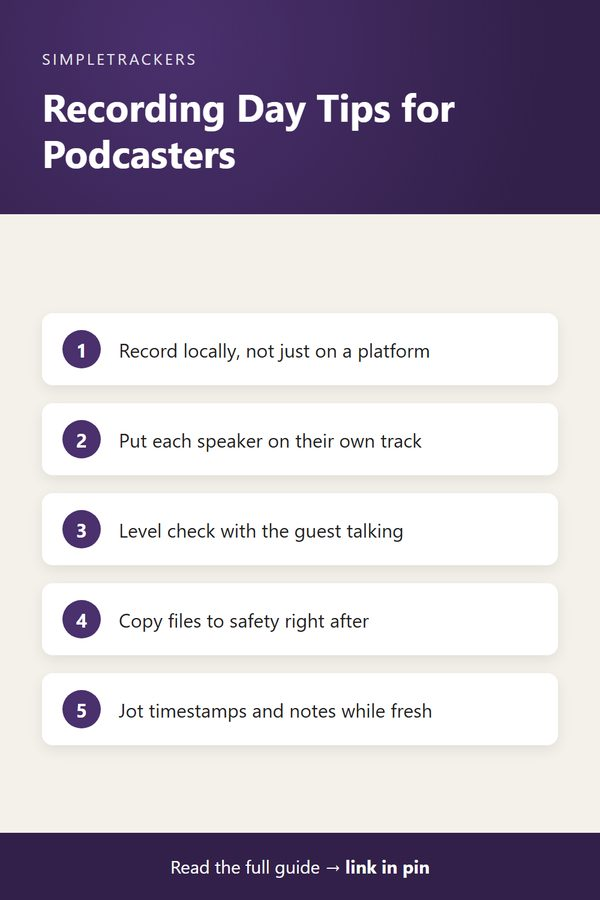

The Complete Podcast Episode Checklist: Idea to Publish
← Back to the Complete Podcast Production Guide

Key takeaways
- Five stages: pre-recording prep, recording day, post-production, publishing, and post-launch follow-up.
- Before recording: lock the topic weeks ahead, invite guests two to three weeks out, and send prep a week before.
- On recording day: record locally, keep each speaker on their own track, and copy files to safety the moment you stop.
- Keep it in one place: one row per episode and one column per stage shows where every episode stands.
Every podcast episode follows the same sequence, yet relying on memory to track it means something inevitably slips. You might send prep materials to a guest but forget to set the editing deadline. You might complete the edit but overlook show notes timestamps.
With one episode at a time, you catch these gaps. But the moment you have two episodes in parallel, with one being recorded while another is in editing and a third is set to publish next week, the moving parts scatter.
Why Episodes Fall Apart Without a Checklist
Episodes move through five distinct stages, each with specific tasks and deadlines:
- Pre-recording preparation. Topic, guest, prep materials, questions.
- The recording session. Capturing clean, backed-up audio.
- Post-production editing. Editing to a deadline, then a full listen.
- Publishing. Show notes, title, links, scheduling.
- Post-launch follow-up. Guests, promotion, sponsors, analytics.
If you're juggling this mentally across multiple episodes, something always slips. A proper checklist becomes the only thing standing between professional consistency and chronic chaos.
Stage 1: Before the Recording
- Topic locked. Decide your episode topic weeks in advance, not days before recording.
- Guest invited and confirmed. Send invitations two to three weeks ahead. Wait for confirmation before finalizing the recording date.
- Prep materials sent. A week before recording, send your guest the topic, format outline, background resources, and any previous episodes they should listen to.
- Questions drafted and space checked. Write your conversation outline and test your recording equipment. Run a full sound check before the guest arrives.
Stage 2: Recording Day
- Record with backup files. Never rely on a platform's native recording. Record locally so you have source files in your hands immediately. If recording a remote guest, ask them to record their side locally as well.
- Separate tracks per participant. Record each speaker on their own track if possible.
- Level check before rolling. Test audio levels with your guest present and speaking naturally.
- Copy files to safety immediately. The moment recording ends, copy audio files to cloud storage or an external drive.
- Jot notes while fresh. Note technical issues, key moment timestamps, guest details, and follow-up items before your memory fades.

Stage 3: Post-Production
- Set a hard editing deadline. Decide how long editing will take and set a firm deadline with buffer time built in.
- Edit and insert segments. Remove silence and filler, add intro and outro music, splice in sponsor reads or prerecorded segments, and ensure levels are consistent.
- Final listen-through. Listen to the entire edited episode from start to finish without multitasking.
Don't tick the box early
Mark post-production as complete only after the full listen-through, not when the edit is "basically done."
Stage 4: Publishing
- Write show notes with timestamps. Summarize key topics and note where they occur in the episode. Include links to resources mentioned and guest information.
- Craft title and description. Use a specific, searchable title. Write a description that summarizes the topic and includes relevant keywords.
- Verify links and codes. Double-check that all links work and affiliate codes are correct.
- Schedule release. Set your publish date and time well in advance, and verify the episode appears correctly in your podcast host's preview.
Stage 5: After It Goes Live
- Send your guest their link. Your guest will want to promote the episode. Send them a direct URL and encourage sharing.
- Run promotion. Post about the episode on social media, email your list, and share clips on relevant platforms.
- Report to sponsors. Send sponsors listener numbers and confirmation that their read aired.
- Check analytics. Monitor your podcast host's downloads and listener feedback to understand what resonates.
Keeping the Checklist Alive Across Episodes
A checklist only works when it's easy to use and lives in one central place. A spreadsheet with one row per episode and one column per stage lets you see at a glance:
- Which episodes are in which stage
- Which deadlines are approaching
- Which guests are confirmed
Without this single source of truth, you're mentally assembling episode status from email threads, Slack messages, and calendar invites.
As you scale from one episode a month to two per week, the checklist scales without adding cognitive load. You can see instantly whether your Tuesday recording slot is free, which prep materials were sent when, and which episodes have been promoted. That operational clarity prevents missed deadlines and dropped details.
The Podcast Producer & Episode Management Tracker comes pre-built with columns for all five stages, guest confirmation status, editing deadlines, and publish dates. It's designed for exactly this workflow—tracking episodes from idea through publication and ensuring nothing slips.